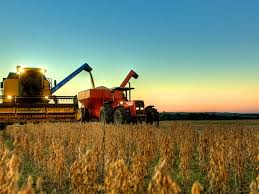
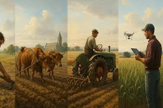

Visão Geral do Comparativismo Agrário
O método comparativo em estudos do campo busca identificar padrões, divergências e regularidades em diferentes sistemas agrários, estruturas fundiárias e movimentos sociais rurais ao redor do mundo. É uma ferramenta essencial para entender como a terra é utilizada e como as sociedades rurais se organizam.
.jpeg)
Comparativo nos Estudos Rurais
O comparativismo compara sistemas agrários para revelar o que estudos isolados não mostram. Hubert Cochet propõe três níveis de análise: parcela, produção e sistema agrário regional. Marc Bloch e Jürgen Kocka são referências do método histórico comparativo. Sergio Schneider comparou Brasil, Rússia e China, identificando semelhanças (pluriatividade) e diferenças (estrutura fundiária). O método dos casos contrastantes prefere comparar realidades muito diferentes.

A Importância da História nos Estudos Agrários
O Comparativismo no Campo valoriza a história dos sistemas agrários. Ignorar o passado faz com que fenômenos históricos sejam vistos como naturais. O estudo histórico envolve reconstituir as mudanças agrárias em um território ao longo do tempo, identificando revoluções agrícolas e transformações nas relações de poder. Sem a história, o pesquisador confunde o transitório com o permanente.